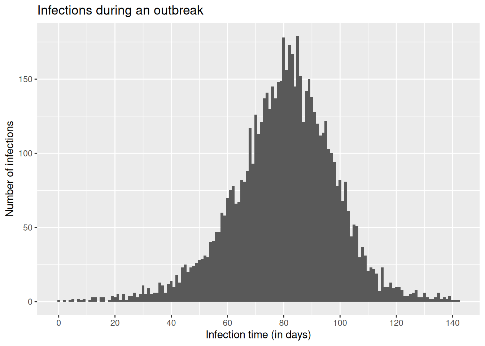
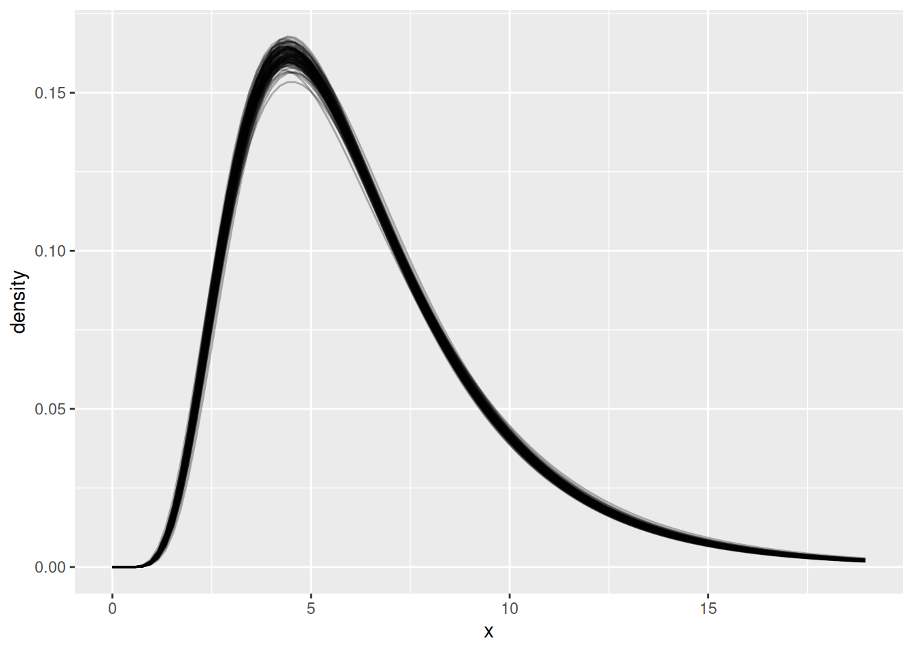

library("nfidd")
library("ggplot2")
library("dplyr")
library("tidyr")
library("lubridate")
library("posterior")
library("tidybayes")Delay distributions
Introduction
Every chain of infectious disease transmission starts with one person infecting another. But we rarely observe these infection events directly. Instead, we typically collect epidemiological data from events that occur after the time of infection: symptom onsets, hospitalisations and discharge, etc. We often then need to understand how much time has passed between these events. For example, the incubation period might be used to determine the appropriate length of quarantine. We also need to have some estimate for these delays when interpreting new data, in order to understand what is happening now 1 and predict what might happen in the future. However, the length of time between any of these events might be highly variable (between individuals) and fundamentally uncertain (across the population as a whole). We capture this variability using probability distributions, which is the focus of this session.
Slides
Objectives
The aim of this session is for you to familiarise yourself with the concept of delay distributions used to describe reporting in infectious disease epidemiology. First we’ll look at this working forwards from infections in an outbreak. We’ll use R to probabilistically simulate delays from infection to reporting symptoms and hospitalisations. Then we’ll work only from this set of outcome data and use a stan model to estimate the parameters of one specific delay (in this example, symptom onset to hospitalisation).
NoteSetup
Source file
The source file of this session is located at sessions/delay-distributions.qmd.
Libraries used
In this session we will use the nfidd package to load a data set of infection times and access stan models and helper functions, the ggplot2 package for plotting, the dplyr and tidyr packages to wrangle data, the lubridate package to deal with dates, the posterior and tidybayes packages for investigating the results of the inference conducted with stan.
Tip
The best way to interact with the material is via the Visual Editor of RStudio.
Initialisation
We set a random seed for reproducibility. Setting this ensures that you should get exactly the same results on your computer as we do. We also set an option that makes cmdstanr show line numbers when printing model code. This is not strictly necessary but will help us talk about the models.
set.seed(1234)
options(cmdstanr_print_line_numbers = TRUE)Simulating delayed epidemiological data
We will start this session by working with a simulated data set of infections from a disease that has caused an outbreak which subsequently ended. In our example outbreak, there were 6383 infections. The outbreak lasted 140 days after the first infection, with new infections peaking roughly around day 80.
Note
For now we will not concern ourselves with the model used to generate the epidemic. This represents a typical situation in the real world, where we may have a model of how an infection has spread, but we don’t necessarily know how well this corresponds to what really happened.
We will later deal with modelling the infectious process. For now, we will focus on modelling how infections get reported in data - the observation process. Using infectious disease data for analysis comes with three common challenges:
- We don’t normally observe infections directly, but their outcomes as symptomatic cases, hospitalisations or other events.
- These observations are an incomplete representation of total infections (e.g. not every infection leads to hospitalisation, and so focusing on hospitalisations will leave some infections unaccounted for).
- These observations happen with a delay after the infection occurs (e.g. from infection to symptom).
Load the outbreak data
We will work with a data set that is included in the nfidd R package that you installed initially. The column infection_time is a linelist of infections from our example outbreak, given as a decimal number of days that have passed since the initial infection of the outbreak. It can be loaded with the data command.
data(infection_times)
head(infection_times) infection_time
1 0.000000
2 2.236708
3 4.091861
4 7.347199
5 8.990060
6 4.635069### visualise the infection curve
ggplot(infection_times, aes(x = infection_time)) +
geom_histogram(binwidth = 1) +
scale_x_continuous(n.breaks = 10) +
labs(x = "Infection time (in days)", y = "Number of infections",
title = "Infections during an outbreak")
Tip
In reality, data from infectious disease surveillance will usually be given as dates, not decimals; and those will usually not represent infection, but an observed outcome such as symptom onset or hospital admission. For now we don’t want to spend too much time manipulating dates in R, but we will get back to working with more realistic surveillance data later.
Working forwards: simulating a sequence of delays after infection
We would now like to simulate hospitalisations arising from this outbreak. We will start with our data on infection times, and work forwards to symptom onsets and then hospitalisations. We’ll make the following assumptions about the process from infection to hospital admission:
- Infection to symptoms:
- We’ll assume all infections cause symptoms.
- Time from infection to symptom onset (incubation period): We assume that the incubation period is gamma-distributed with shape 5 and rate 1, i.e. a mean of 5 days.
- Symptoms to hospital admission:
- We’ll assume that 30% of symptomatic cases become hospitalised.
- Time from symptom onset to hospital admission: We assume that this delay is lognormally distributed, with meanlog 1.75 and sdlog 0.5, corresponding to a mean delay of about a week.
Let’s put these assumptions into practice by simulating some data, adding onset and hospitalisation times (in decimal number of days after the first infection) to the infection times. We’ll use random values for each infection from the probability distributions we’ve assumed above.
TipTake a few minutes
Throughout the course, we repeatedly use some small chunks of code. Instead of copying these between sessions, we’ve put them into functions in the nfidd R package that we can use when needed. To see exactly what the function does, just type the function name, e.g. add_delays for the function below.
df <- add_delays(infection_times)
TipTake 2 minutes
Have a look at the add_delays() function and try to understand its inner workings. You can also access a help file for this function, just like any other R function, using ?add_delays.
NoteSolution
The add_delays() function takes a dataframe with infection_time and creates a complete simulated dataset:
- Adds
onset_timeby sampling gamma-distributed incubation delays (rgamma(n(), shape = 5, rate = 1)) - Adds
hosp_timeby sampling lognormal-distributed delays from onset (rlnorm(n(), meanlog = 1.75, sdlog = 0.5)) - Sets
hosp_timetoNAfor 70% of cases (only 30% are hospitalised) usingrbinom() - Returns a dataframe with all three time columns
Now we can plot infections, hospitalisations and onsets.
# convert our data frame to long format
dfl <- df |>
pivot_longer(
cols = c(infection_time, onset_time, hosp_time),
names_to = "type", values_to = "time"
) |>
mutate(type = ordered(type,
levels = c("infection_time", "onset_time", "hosp_time"),
labels = c("Infections", "Symptom onsets", "Hospitalisations")
))
# plot
ggplot(dfl, aes(x = time)) +
geom_histogram(position = "dodge", binwidth = 1) +
facet_wrap(~ type, ncol = 1) +
xlab("Time (in days)") +
ylab("Count")Warning: Removed 4524 rows containing non-finite outside the scale range
(`stat_bin()`).
Estimating delay distributions from outcome data
As mentioned above, our data set of infection, symptom onset and hospitalisation times is not the typical data set we encounter in infectious disease surveillance. In reality, we don’t have infection dates, and we also have to deal with missing data, incomplete observations, data entry errors etc. For now, let us just assume we have a data set only including symptom onset times and some hospitalisation times.
Let’s look at a specific problem: we would like to estimate how long it takes for people to become hospitalised after becoming symptomatic. This might be an important delay to know about, for example when modelling and forecasting hospitalisations, or more generally for estimating required hospital capacity.
To do this we can use our data with stan to model the delay from symptom onset to hospitalisation, with the same assumption that it follows a lognormal distribution.
TipTake a few minutes
This is where we apply the Bayesian inference concepts from the slides. We’re using Stan to estimate the parameters of a lognormal distribution (meanlog and sdlog) from our observed delay data. The nfidd_cmdstan_model() function loads a pre-written Stan model for this purpose.
mod <- nfidd_cmdstan_model("lognormal")
mod 1: // lognormal_model.stan
2: data {
3: int<lower=0> n; // number of data points
4: array[n] real y; // data
5: }
6:
7: parameters {
8: real meanlog;
9: real<lower=0> sdlog;
10: }
11:
12: model {
13: meanlog ~ normal(0, 10); // prior distribution
14: sdlog ~ normal(0, 10) T[0, ]; // prior distribution
15:
16: y ~ lognormal(meanlog, sdlog);
17: }
TipTake a few minutes
Look at the Stan model code above and try to understand its structure. What are the data, parameters, and model blocks doing? What priors are being used?
NoteSolution
The lognormal Stan model has three main blocks:
- Data block: Specifies we need
n(number of observations) andy(the delay data) - Parameters block: We want to estimate
meanlogandsdlog(the two parameters of the lognormal distribution) - Model block:
- Sets weakly informative normal priors for both parameters
sdlogis constrained to be positive (standard deviations must be positive)- The likelihood states that our data
yfollows a lognormal distribution with these parameters
NoteStan reference materials
For more information on the Stan based tools used in this session:
- Stan reference guide - covers probability distributions (log-normal, gamma), Bayesian inference basics, and Stan model structure
- Using our Stan models guide - practical guide to working with NFIDD’s Stan models, including
nfidd_cmdstan_model()andnfidd_sample()functions used below
Let’s estimate the onset-to-hospitalisation delay using the simulated data set we created above. Do we recover the parameters used for simulation?
We can do this by sampling from the model’s posterior distribution by feeding it our simulated data set.
## Specify the time from onset to hospitalisation
df_onset_to_hosp <- df |>
mutate(onset_to_hosp = hosp_time - onset_time) |>
# exclude infections that didn't result in hospitalisation
drop_na(onset_to_hosp)
## Use the data to sample from the model posterior
res <- nfidd_sample(
mod,
data = list(
n = nrow(df_onset_to_hosp),
y = df_onset_to_hosp$onset_to_hosp
)
)
NoteWhat is sampling?
Stan has used Markov Chain Monte Carlo (MCMC) to generate samples from the posterior distribution of our parameters. The posterior distribution is the conditional probability distribution of the parameters given the observed data - p(parameters | data). This represents our updated beliefs about the parameter values after combining our prior knowledge with the evidence from the observed delays. Using Bayes’ theorem: posterior ∝ likelihood × prior. Each sample represents a plausible set of parameter values given our data and priors.
To find out more about the arguments that can be passed to cmdstanr::sample via the nfidd_sample() function we used here, you can use ?cmdstanr::sample. To see the estimates, we can use:
res$summary() ## could also simply type `res`# A tibble: 3 × 10
variable mean median sd mad q5 q95 rhat ess_bulk
<chr> <dbl> <dbl> <dbl> <dbl> <dbl> <dbl> <dbl> <dbl>
1 lp__ -1322. -1322. 0.982 0.703 -1324. -1.32e+3 1.00 1092.
2 meanlog 1.73 1.73 0.0116 0.0115 1.71 1.75e+0 1.00 1835.
3 sdlog 0.493 0.493 0.00781 0.00800 0.481 5.06e-1 1.00 1591.
# ℹ 1 more variable: ess_tail <dbl>
TipTake a few minutes
Look at the summary output above. What do the columns mean? What are the values of meanlog and sdlog? How do they compare to the true values we used in simulation (meanlog = 1.75, sdlog = 0.5)?
NoteSolution
The summary shows key statistics for each parameter:
- Mean: Average value across all posterior samples
- Median: Middle value when samples are sorted
- SD: Standard deviation of the posterior samples (uncertainty)
- MAD: Median absolute deviation (robust measure of uncertainty)
- Q5, Q95: 5th and 95th percentiles (90% credible interval)
- Rhat: Convergence diagnostic (should be close to 1.0)
- ESS: Effective sample size (should be > 400 for reliable estimates)
The meanlog and sdlog estimates should be close to the true simulation values (1.75 and 0.5), showing our model successfully recovered the parameters.
For more details on interpreting Stan output, see the Stan reference guide.
These estimates should look similar to what we used in the simulations.
We can also calculate the mean and standard deviation of the lognormal distribution from the estimated parameters:
res |>
summarise_lognormal() mean sd
Min. :6.145 Min. :3.038
1st Qu.:6.316 1st Qu.:3.282
Median :6.369 Median :3.339
Mean :6.372 Mean :3.343
3rd Qu.:6.424 3rd Qu.:3.400
Max. :6.654 Max. :3.621 This shows us the mean and standard deviation of the onset-to-hospitalisation delay in days, which is often more interpretable than the lognormal parameters. We can plot the resulting probability density functions.
Note
Every time we sample from the model posterior, we create 4000 iterations. That is a lot of data to plot, so instead, when we produce plots we’ll use a random sample of 100 iterations. You’ll see this throughout the course.
## get shape and rate samples from the posterior
res_df <- res |>
as_draws_df() |>
filter(.draw %in% sample(.draw, 100)) # sample 100 draws
## find the value (x) that includes 99% of the cumulative density
max_x <- max(qlnorm(0.99, meanlog = res_df$meanlog, sdlog = res_df$sdlog))
## calculate density on grid of x values
x <- seq(0, max_x, length.out = 100)
res_df <- res_df |>
crossing(x = x) |> ## add grid to data frame
mutate(density = dlnorm(x, meanlog, sdlog))
## plot
ggplot(res_df, aes(x = x, y = density, group = .draw)) +
geom_line(alpha = 0.3)
TipTake a few minutes
Look at the plot above. What do you see? Why are there multiple lines? What does this tell us about our uncertainty in the delay distribution?
NoteSolutions
The plot shows multiple semi-transparent lines, each representing a different plausible delay distribution:
- Multiple lines: Each line represents one possible lognormal distribution based on a different sample from the posterior
- Uncertainty visualisation: The spread of lines shows our uncertainty about the true delay distribution - we’re not certain about the exact shape
- Limited data: This uncertainty comes from having limited data - with more data, the lines would cluster more tightly together
- Parameter trade-offs: Different combinations of meanlog and sdlog can produce very similar-looking distributions, making it hard to pin down exact parameter values
- Right-skewed shape: All curves show the characteristic right-skewed shape of lognormal distributions, appropriate for delays
- Most likely region: Where lines cluster together shows where we’re most confident about the distribution shape
This visualisation captures both our estimate of the delay distribution and our uncertainty about it.
Going further
Challenge
In this session we were in the enviable situation of knowing which distribution was used to generate the data. With real data, of course, we don’t have this information available.
Impact of sample size: Try subsampling your data to see how fewer observations affect your parameter estimates and uncertainty.
Subsample to 100 observations and refit the model to compare results:
df_small <- df_onset_to_hosp |> slice_sample(n = 100)Different delay lengths: The updated
add_delays()function now allows you to change the delay parameters.Try longer delays and see how this affects your parameter recovery:
df_long <- add_delays(infection_times, hosp_params = list(meanlog = 2.5, sdlog = 0.5))Different variability of the delay: Try changing the variability of the delay to see how it affects uncertainty in estimates.
More variable delays (higher sdlog):
df_variable <- add_delays(infection_times, hosp_params = list(meanlog = 1.75, sdlog = 1.0))Less variable delays (lower sdlog):
df_precise <- add_delays(infection_times, hosp_params = list(meanlog = 1.75, sdlog = 0.2))Different type of distribution: Try using a completely different distribution for the delays.
Use gamma distribution instead of lognormal:
df_gamma <- add_delays(infection_times, hosp_fun = rgamma, hosp_params = list(shape = 2, rate = 0.3))Different fitted distribution: Try fitting a different distribution to the data. For example, use the gamma Stan model instead of lognormal:
mod_gamma <- nfidd_cmdstan_model("gamma")
See the Using our Stan models guide for more available models
- Try using one of the methods in practice below to fit a distribution to the data.
Methods in practice
- There are many tools for fitting a distribution to a set of observed delays. For example, we could implement a regression approach in e.g. brms, or use a package such as
fitdistrplusor the ‘naive’ model inepidist.
Wrap up
- Review what you’ve learned in this session with the learning objectives
- Share your questions and thoughts
References
Footnotes
Much like Alice through the Looking Glass, it often seems like we are running to stay in the same place!↩︎